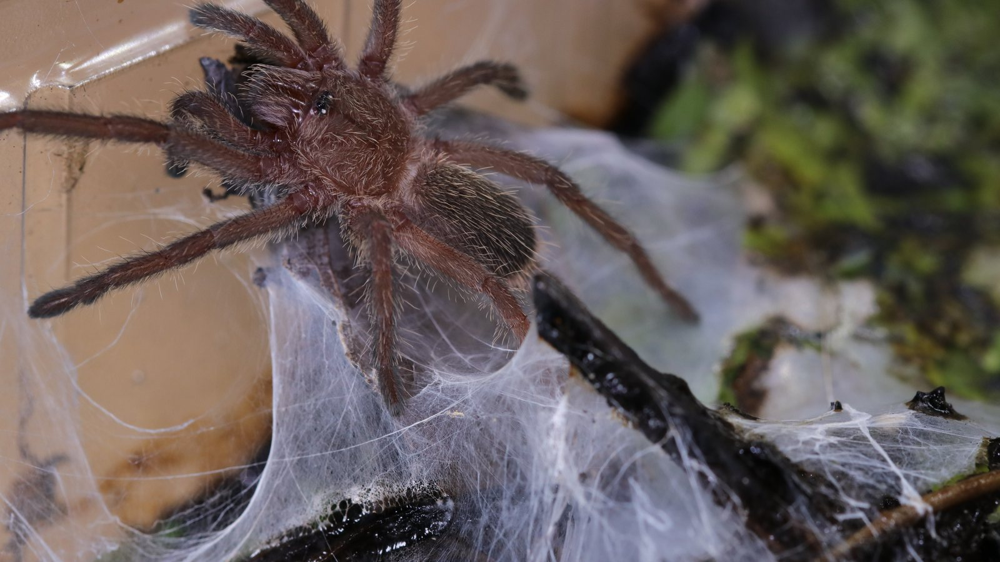
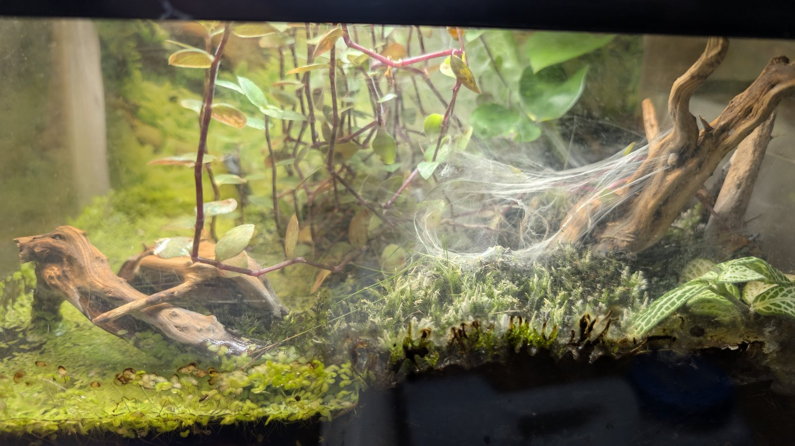

This is a hobby locality form rather than a formally described species. The resident is strongly retreat-oriented and has built a broad web sheet around its doorway in the collection.
Species profile · Current resident
Chilobrachys sp. “Kaeng Krachan”
Tarantula
This Chilobrachys sp. “Kaeng Krachan” is part of the current collection. The profile begins with a close, eye-level portrait from within the enclosure.

Scientific nameChilobrachys sp. “Kaeng Krachan”
FamilyTheraphosidae
Native rangeHobby locality label; exact range unresolved
TaxonomyInformal designation
SexUnknown
In the wild
Natural history.
The uncertainty is scientifically important: an attractive hobby name is not the same as a published species description. The page therefore separates verified genus information from observations of this individual.
The paludarium, web sheet, and feeding doorway are documented as this animal's record. Precise wild range and species-wide care claims are intentionally avoided.
Taxonomy and range
Chilobrachys sp. “Kaeng Krachan” is an informal hobby designation, not a formally published binomial with an author and description. The name is retained because it is the label attached to this individual, but it should not be treated as a settled species identification.
What the record can show
The World Spider Catalog recognises the genus Chilobrachys while not listing “Kaeng Krachan” as an accepted species. Until a formal revision connects this hobby form to described material, the profile deliberately avoids precise range, conservation, and species-level biological claims.
In my care
In my care.
This is the individual kept under the hobby designation Chilobrachys sp. “Kaeng Krachan.” Its paludarium build, feeding records, and future photographs form a personal record while the profile remains transparent about the unresolved formal identity.



From Instagram
Posts & reels.
From the channel
Related viewing.
Introvertebrates on YouTube
Building a jungle paludarium for Chilobrachys sp. Kaeng Krachan
The complete enclosure build behind this resident’s dark, humid presentation.
Personal observations
From the Codex.
Introvertebrates Codex
Current resident · keeper record
A privacy-safe summary of this resident’s time in care, feeding outcomes, molts, and measurements. These are observations from the Introvertebrates collection, not species-wide averages.
Awaiting a privacy-reviewed Codex export. No invented statistics are shown.
Never published here: raw notes, record IDs, seller or breeder details, enclosure identifiers, local file paths, or exact private event dates.
Continue exploring
Related profiles.


Read further
Sources.
- World Spider Catalog — genus ChilobrachysView the source.